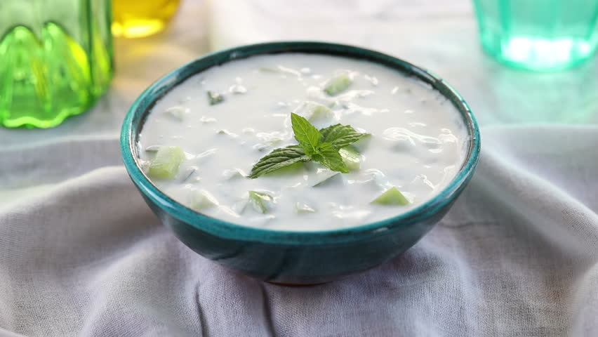

Cagik
Een van de meest verfrissende salades uit Turkije.
Ingrediënten
- 1 grote komkommer
- zout
- 2-3 teentje knoflook
- 1/2 liter gewone yoghurt
- 2 eetlepels gedroogde munt
- 3/4 eetlepels olie
bereidingswijze
- Schil de komkommer en snijd hem in blokjes. Leg deze in een vergiet en strooi er wat zout over. Laat de komkommer een halfuur uitlekken.
- Plet de knoflook met een stamper in de vijzel met het zout. meng de knoflookpulp goed met 2 - 3 eetlepels yoghurt en meng dit door de rest van de yoghurt.
- Roer wat olijfolie door de yoghurt, voeg de uitgelekte komkommer en anderhalve eetlepel munt toe.
- Meng alles goed door elkaar, proef en voeg eventueel wat extra zout toe.

Tip Strooi vlak voor het serveren een klein beetje munt op de salade.